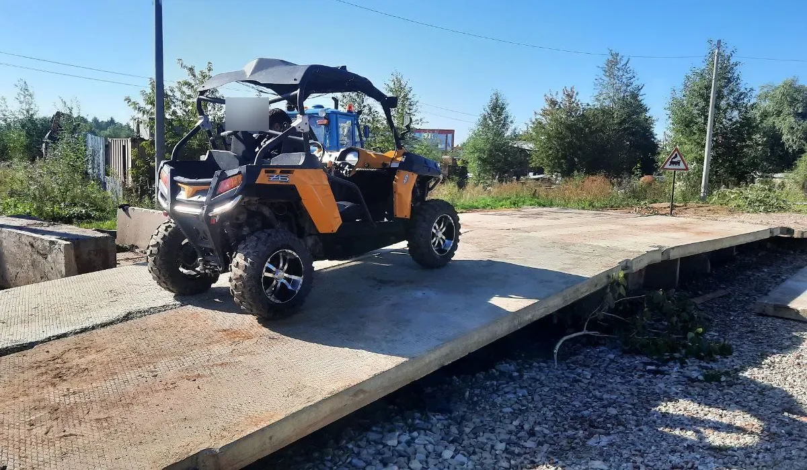

Категории A II, A III и A IV: кому они доступны
Три категории, к которым не допустят без российских водительских прав и года стажа управления. Разбираем, какая техника сюда относится и почему требования строже, чем к тракторам.
На вездеход, багги повышенной массы или вахтовый автобус вездеходного типа не получится просто прийти и сдать экзамен, даже если вам есть 22 года и вы прошли обучение. У трёх категорий из девяти — A II, A III и A IV — есть дополнительное условие, которого нет у остальных: без российского водительского удостоверения и стажа управления им экзамен не примут. Разбираем норму, из чего она складывается и что это меняет для кандидата.
Что такое внедорожное автотранспортное средство

Все три категории относятся к подкатегориям буквы A — то есть речь о технике, которая либо не предназначена для движения по автомобильным дорогам общего пользования, либо имеет максимальную конструктивную скорость не выше 50 км/ч. Внутри этой группы категория A I закрывает мототехнику (квадроциклы, снегоходы), а A II, A III и A IV — именно автотранспортные средства: технику с кузовом, местами для пассажиров, рассчитанную на перевозку людей или грузов. Дальше эти три категории разводятся между собой по массе и назначению.
A II: до 3500 кг и не больше восьми мест
Категория A II — внедорожные автотранспортные средства, разрешённая максимальная масса которых не превышает 3500 кг и число сидячих мест которых, помимо сиденья водителя, не превышает восьми. Формулировка близка к границе категории B водительских прав, только для внедорожной техники: багги, лёгкие вездеходы, компактные внедорожные машины для перевозки небольшой группы людей или груза.
A III: свыше 3500 кг, кроме пассажирских
Категория A III — внедорожные автотранспортные средства, разрешённая максимальная масса которых превышает 3500 кг, за исключением относящихся к категории A IV. Оговорка про исключение здесь принципиальна: сначала нужно проверить, не подпадает ли машина под A IV (пассажирская, больше восьми мест), и только если нет — относить её к A III по массе. Без этой последовательности проверки тяжёлый вахтовый вездеход для перевозки людей можно было бы ошибочно отнести сразу к обеим категориям.
A IV: пассажирские, больше восьми мест
Категория A IV — внедорожные автотранспортные средства, предназначенные для перевозки пассажиров и имеющие, помимо сиденья водителя, более восьми сидячих мест. Это, по сути, внедорожный аналог автобуса: вахтовки повышенной вместимости, специализированные пассажирские вездеходы.
Три категории целиком — в одной таблице:
| Категория | Масса / назначение | Возраст | Часы по типовой программе |
|---|---|---|---|
| A II | до 3500 кг, не более 8 мест сверх водителя | 19 лет | 198 |
| A III | свыше 3500 кг (кроме A IV) | 19 лет | 204 |
| A IV | пассажирские, более 8 мест сверх водителя | 22 года | 198 |
Общее требование: российское ВУ и стаж от 12 месяцев
К экзамену на все три категории — A II, A III и A IV — Правила допуска предъявляют одно общее дополнительное условие: наличие российского национального водительского удостоверения на право управления транспортным средством соответствующей категории и стаж управления им не менее 12 месяцев. Это требование не распространяется на категорию A I и не распространяется на категории B, C, D, E, F — оно закреплено именно и только для трёх внедорожных автомобильных категорий.
Практический смысл: прежде чем идти сдавать экзамен на A II, A III или A IV, нужно уже иметь на руках действующее водительское удостоверение (обычно ближайшей по логике автомобильной категории) и минимум год стажа управления по нему.
Как считается стаж и чего Правила допуска не разъясняют
Сама формулировка требования — «стаж управления не менее 12 месяцев» — не сопровождается в тексте Правил допуска методикой подсчёта: от какой именно даты вести отсчёт, засчитывается ли стаж по нескольким последовательным удостоверениям или только по последнему, — норма этого не описывает. Практический ориентир: скорее всего имеется в виду срок с даты выдачи действующего водительского удостоверения до дня сдачи экзамена, но это предположение, а не цитата нормы, и его стоит уточнять непосредственно в органе гостехнадзора, а не полагаться на самостоятельное толкование.
Отдельная тонкость: среди прямо перечисленных в Правилах допуска оснований для недопуска к экзамену недостаточный стаж или отсутствие подходящего водительского удостоверения не названы отдельной строкой — но сама возможность сдавать экзамен на категории A II, A III и A IV обусловлена именно наличием ВУ и стажа как условием допуска. Похоже на то, что без выполнения этого условия кандидата к экзамену на практике не допустят, даже если формально ситуация не расписана в перечне оснований для отказа как отдельный пункт, — но это предположение по совокупности норм, а не прямая цитата. Информацию о наличии и категории российского водительского удостоверения орган гостехнадзора получает через систему межведомственного электронного взаимодействия — то есть кандидату не обязательно приносить его лично, но подтверждение всё равно должно найтись.
Возраст поверх требования о стаже
Требование о стаже — не единственное дополнительное условие для этих трёх категорий. К экзамену на A II и A III допускают с 19 лет, на A IV — с 22 лет. Оба условия действуют одновременно: у девятнадцатилетнего кандидата на A II должен быть не только подходящий возраст, но и год стажа управления транспортным средством — то есть фактически водительские права должны быть получены не позже 18 лет. Подробный разбор всей возрастной шкалы по категориям — в статье «Со скольких лет можно получить права на трактор».
Объём обучения по типовым программам
Типовые программы профессионального обучения по этим категориям, утверждённые приказом Минсельхоза России от 25.07.2022 № 465 (действует с 01.03.2024 до 01.03.2030), различаются по общему числу часов: категория A II — 198 часов, категория A III — 204 часа, категория A IV — 198 часов. Разница между A II/A IV и A III в 6 часов приходится на отдельный предмет учебного плана A III — прокладку зимних дорог по заболоченной местности и их расчистку, которого нет в программах A II и A IV. Во всех трёх программах вождение проводится вне сетки учебного времени.
Типичные ошибки при выборе между A II и A III
Ошибка первая — путать разрешённую максимальную массу машины с её снаряжённой (собственной) массой. Разрешённая максимальная масса — это масса машины вместе с максимальной загрузкой, пассажирами и грузом, а не то, сколько машина весит пустой; на границе 3500 кг эта разница может определить, A II перед вами или A III.
Ошибка вторая — забыть проверить критерий A IV раньше критерия A III. Формулировка A III прямо требует исключить машины, относящиеся к A IV: если техника рассчитана на перевозку пассажиров и имеет больше восьми мест сверх водителя, речь идёт об A IV независимо от массы, и категория A III здесь не подходит, даже если масса превышает 3500 кг.
Что касается остальных категорий внедорожной и обычной самоходной техники — полный перечень с формулировками собран в статье «Категории удостоверения тракториста-машиниста», а категория A I и мототехника вроде квадроциклов и снегоходов разобраны отдельно в статье «Права на квадроцикл и снегоход». С тем, какие категории заявляет тракторное направление «Авто-Класса», можно ознакомиться на странице направления.